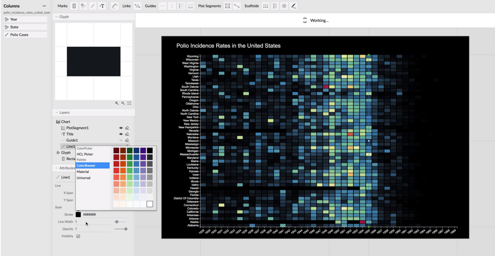

<!doctype html>
<html lang="en">
    <head>
        <meta charset="utf-8">
        <title>reveal-md</title>
        <link rel="stylesheet" href="./css/reveal.css">
        <link rel="stylesheet" href="./css/theme/solarized.css" id="theme">
        <link rel="stylesheet" href="./css/highlight/zenburn.css">
        <link rel="stylesheet" href="./css/print/paper.css" type="text/css" media="print">

    </head>
    <body>

        <div class="reveal">
            <div class="slides"><section  data-markdown><script type="text/template">### Nouveaux Outils (premières impressions)

<br>

 * [Charticulator](https://charticulator.com/) (Microsoft, California U.)
 * [Data Illustrator](http://data-illustrator.com) (Adobe, Georgia I.T.)
 <br>
<center>
<small>Alain Roan - Toulouse dataviz - 7 nov 2018 </small>
</center>
</script></section><section  data-markdown><script type="text/template">

### Ce qu'il faut retenir, les 2 sont:
* outils web avec beaucoup de d3 dedans
* nouveaux ? <> Excel, Tableau, Vega, plotly, flourish, ... 
* pour le non-programmeur
* approches différentes: bases et concepts
* pas prévus pour les cartes ou les réseaux
* gratuit, open source, en beta test **discret**
* processus commun:
 * faire un dessin
 * lier les données aux attributs graphiques

</script></section><section  data-markdown><script type="text/template">
<section data-background-iframe="http://data-illustrator.com">
</section>

</script></section><section  data-markdown><script type="text/template">
<section data-background-iframe="http://charticulator.com">
</section>
</script></section><section  data-markdown><script type="text/template">
### Data Illustrator
<section data-background-iframe="http://data-illustrator.com/gallery.php">

</section>

</script></section><section  data-markdown><script type="text/template">
##### Data Illustrator


</script></section><section  data-markdown><script type="text/template">
### Data Illustrator: Principe remarquable
#####  &nbsp;&nbsp;&nbsp;&nbsp;&nbsp;&nbsp;&nbsp;&nbsp;&nbsp;&nbsp;         repeat 		 &nbsp; &nbsp; &nbsp; &nbsp; &nbsp;&nbsp;&nbsp;				partition
<br>

</script></section><section  data-markdown><script type="text/template">
## Remarques
 * algorithme de liaison paresseuse
 * liaison données/ visuels:
   * pas drag & drop
   * menu déroulant sur l'attribut graphique
 * pas réussi à faire un pie chart (pas encore implémenté)
</script></section><section  data-markdown><script type="text/template">### Charticulator
<section data-background-iframe="https://charticulator.com/gallery/index.html">

</section>

</script></section><section  data-markdown><script type="text/template">##### Charticulator


</script></section><section  data-markdown><script type="text/template">
### Charticulator: Principe remarquable
Mark -> Glyph -> Chart/Layout

<br>
Les données sont reliées au glyph **et** au chart
</script></section><section  data-markdown><script type="text/template">
## Remarques
 * un algorithme de résolution de contraintes
 * des expérimentations et des entretiens avec des professionnels
 * un comparatif **nombre de clics** avec (Data Illustrator, Lyra, iVisDesigner)
 * il est facile de se perdre  
</script></section><section  data-markdown><script type="text/template">
## Conclusion
**Je n'ai pas encore d'opinion très arrêtée**
  * Des avancées certaines, une liberté impressionnante
  * Pas certain que la simplicité apparente soit réelle pour tout le monde
  * Lire (rapidement) les papiers publiés
  * Prévoir une heure pour essayer:
    * regarder une ou deux vidéos
    * recréer une des visualisations fournies
    * essayer en hors-piste
</script></section><section  data-markdown><script type="text/template">
## Fini

ou démonstrations si on a encore le temps
</script></section></div>
        </div>

        <script src="./lib/js/head.min.js"></script>
        <script src="./js/reveal.js"></script>

        <script>
            function extend() {
              var target = {};
              for (var i = 0; i < arguments.length; i++) {
                var source = arguments[i];
                for (var key in source) {
                  if (source.hasOwnProperty(key)) {
                    target[key] = source[key];
                  }
                }
              }
              return target;
            }

            // Optional libraries used to extend on reveal.js
            var deps = [
              { src: './lib/js/classList.js', condition: function() { return !document.body.classList; } },
              { src: './plugin/markdown/marked.js', condition: function() { return !!document.querySelector('[data-markdown]'); } },
              { src: './plugin/markdown/markdown.js', condition: function() { return !!document.querySelector('[data-markdown]'); } },
              { src: './plugin/highlight/highlight.js', async: true, callback: function() { hljs.initHighlightingOnLoad(); } },
              { src: './plugin/zoom-js/zoom.js', async: true },
              { src: './plugin/notes/notes.js', async: true },
              { src: './plugin/math/math.js', async: true }
            ];

            // default options to init reveal.js
            var defaultOptions = {
              controls: true,
              progress: true,
              history: true,
              center: true,
              transition: 'default', // none/fade/slide/convex/concave/zoom
              dependencies: deps
            };

            // options from URL query string
            var queryOptions = Reveal.getQueryHash() || {};

            var options = {};
            options = extend(defaultOptions, options, queryOptions);
        </script>


        <script>
            Reveal.initialize(options);
        </script>
    </body>
</html>
